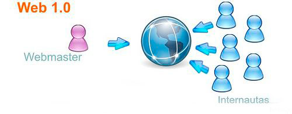

IAW
Bienvenidos a la historia de la web
José Agustín Hernández Mesa
Implantación de Aplicaciones Web
INTRODUCCIÓN
Es un documento digital de caracter multimediático, que esta adaptado a los estandares de World Wide Web (WWW) que se accede a través de un navegador web e Internet.
WEB 1.0
Inventada por Tim Berners-Lee
1990 - 2004
¿Qué es?
Son las primeras páginas web que existieron. No empezó a usarse este término hasta que Darci DiNucci en el 99 invento el termino web 1.0 y 2.0.
Características.
- Páginas estáticas.
- Contenido del sitio almacenado en archivos.
- Combinación entre contenido y diseño.
- Etiquetas de HTML patentadas.
- Envio de formularios por email.
WEB 2.0
Inventado por Darcy DiNucci
Popularizado por Tim O'Reilly
2004 - 2010

¿Qué es?
Fue la primera gran evolución. Más conocida como web social ha permitido que podamos intercambiar nuestra información entre diferentes personas mediante el uso de foros, blogs o redes sociales.
Características.
- Hosting adecuado.
- Una navegación sencilla.
- Buen encabezado.
- Contenido e imagenes destacadas.
- Botones para llamar a la acción.
- Landing Pages(Páginas de destino).
WEB 3.0
Inventada por Jeffrey Zeldman
2010 - 2016

¿Qué es?
Relacionada a lo que se conoce como web semántica. Las personas que acceden pueden interactuar con la red usando un lenguaje natural que lo puede interpretar el propio software. Esta relacionada con la Inteligencia Artificial.
Características
- Facilidad de navegación.
- Evolución de las redes sociales.
- Mucha más rápidez.
- Más conectividad entre dispositivos.
- Contenido libre.
- Búsquedas inteligentes.
- Datos vinculados.
WEB 4.0
2016 - Actualidad
¿Qué es?
Próximo gran avance, centrado en ofrecer un comportamiento más inteligente y productivo de modo que haciendo solo una afirmación se puede poner en marcha un conjunto de acciones que seran el resultado de lo que hayamos pedido.
Características
Se fundamenta en cuatro pilares que son:
- Comprensión del lenguaje natural y técnicas de Speech-to-text.
- Nuevos modelos de comunicación Máquina-Máquina (M2M).
- Uso de información de contexto.
- Modelo nuevo para interatuar con el usuario.